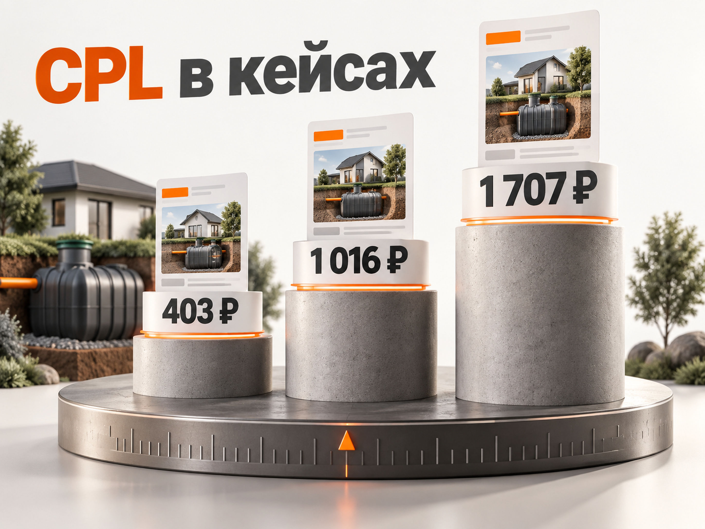

Блог о платном трафике
Как продвигать септики в 2026 году: реклама, заявки и прогноз продаж
Продвижение септиков имеет смысл считать не от кликов и даже не от количества заявок, а от заключённых договоров. В этой нише между рекламой и продажей обычно находится несколько этапов: обращение, квалификация, подбор оборудования, замер участка, расчёт и только затем договор.
Свежие кейсы показывают, насколько опасно ориентироваться на одну «среднюю стоимость лида». В проектах по септикам можно встретить и 403 ₽ за обращение, и более 1 700 ₽. При этом дешёвая заявка сама по себе ничего не говорит о количестве монтажей и прибыли.
Поэтому рабочая схема выглядит так:
реклама -> заявка -> квалифицированный лид -> замер -> договор -> монтаж
Именно такую воронку я бы использовал для планирования рекламы компании, которая продаёт и устанавливает септики, станции биологической очистки или автономную канализацию под ключ.
Почему реклама септиков отличается от обычной лидогенерации
Покупатель редко приходит с точным техническим заданием. Он может знать количество проживающих в доме и примерный бюджет, но не понимать, какая система ему подходит, как влияют грунтовые воды, какой нужен объём, требуется ли дополнительный дренаж и сколько в итоге будет стоить монтаж.
Поэтому задача посадочной страницы и первого контакта не только «продать септик», но и помочь подобрать решение.
Отсюда появляются несколько разных типов спроса:
- установка септика под ключ;
- монтаж септика;
- автономная канализация для дома;
- станция биологической очистки;
- конкретные бренды и модели;
- покупка оборудования без монтажа;
- бетонные кольца;
- обслуживание и откачка;
- информационные запросы вроде «какой септик выбрать» или «септик своими руками».
Объединять всё это в одну рекламную кампанию и вести на одну универсальную страницу рискованно. Человек, который хочет купить станцию самостоятельно, и владелец участка, которому нужен полный монтаж под ключ, фактически находятся в разных сегментах.
Сезонность тоже выражена достаточно сильно. В средней полосе и Сибири активные земляные работы обычно приходятся на период примерно с апреля по октябрь. На юге сезон может быть значительно длиннее. В свежих отраслевых публикациях 2026 года также отдельно отмечается рост конкуренции в период активного строительства.
Какая воронка нужна в рекламе септиков
Главная ошибка при анализе рекламы - остановиться на CPL.
Допустим, рекламная кампания получила 100 заявок по 1 500 ₽. Формально результат выглядит понятным: потрачено 150 000 ₽.
Но дальше возможны совершенно разные ситуации.
В первом проекте:
100 заявок -> 60 квалифицированных -> 25 замеров -> 10 договоров.
Стоимость договора составляет 15 000 ₽.
Во втором:
100 заявок -> 25 квалифицированных -> 8 замеров -> 2 договора.
Тот же CPL 1 500 ₽ превращается уже в 75 000 ₽ за договор.
Поэтому минимум нужно фиксировать:
- Все обращения.
- Квалифицированные лиды.
- Назначенные замеры.
- Состоявшиеся замеры.
- Договоры или внесённые предоплаты.
- Рекламные расходы.
- Выручку и желательно маржу.
Это особенно важно в строительной нише, где стоимость обработки обращения существенно выше стоимости отправленной формы.
Подробнее разницу между заявкой и реальным клиентом я разбирал в материалах про CAC и конверсию лида в продажу.
Какие результаты показывают свежие кейсы по септикам
Свежих опубликованных данных достаточно, но сравнивать их напрямую нужно осторожно. Компании используют разные определения лида и разные методы расчёта расходов.
Кейс 1. Московская область, ноябрь 2025 года
В опубликованном кейсе Нефтетрафика за три месяца работы указано:
- рекламный бюджет - 552 000 ₽;
- обращения - 1 369;
- CPL - 403 ₽;
- целевые контакты после квалификации - 821;
- выезды на замер - 300;
- договоры - 75;
- расчётная выручка - 12,3 млн ₽.
Если пересчитать опубликованные исходные данные:
552 000 / 75 = 7 360 ₽ рекламных расходов на договор.
До квалификации дошли примерно 60% обращений.
Из квалифицированных контактов примерно 36,5% дошли до замера, а четверть состоявшихся в этой выборке замеров завершилась договором.
При этом из всех первоначальных обращений до договора дошло около 5,5%.
Это хороший пример того, почему показатель 403 ₽ нельзя воспринимать отдельно. Бизнес покупал не договор за 403 ₽, а верх воронки.
Кейс 2. Москва и Московская область, март 2026 года
В кейсе производителя Mezler опубликованы следующие показатели:
- рекламный бюджет - 256 000 ₽;
- услуги подрядчика - 55 000 ₽;
- всего инвестировано в маркетинг - 311 000 ₽;
- обращения - 150;
- квалифицированные лиды - 97;
- оплаченные договоры - 48;
- стоимость установки - 115 000 ₽.
Если считать только рекламный бюджет:
256 000 / 150 = примерно 1 707 ₽ за обращение.
Если считать все заявленные расходы на маркетинг:
311 000 / 97 = примерно 3 206 ₽ за квалифицированный лид.
Стоимость оплаченного договора с учётом этих расходов:
311 000 / 48 = примерно 6 479 ₽.
В этом проекте конверсия получилась необычно высокой: примерно 32% всех обращений превратились в оплаченные договоры. Сам источник сообщает, что около 65% лидов прошли квалификацию, а около половины квалифицированных лидов заключили договор.
Использовать такую конверсию как норматив рынка я бы не стал.
Ещё один свежий кейс
В сентябре 2026 года опубликован ещё один кейс по Москве и Московской области с 207 заявками примерно по 1 016 ₽. Автор указывает средний чек порядка 250 000 ₽. Подробной сопоставимой воронки до договора в доступных данных меньше, поэтому этот результат полезен как дополнительная точка по стоимости обращения, но не как основа прогноза продаж.
Таким образом, даже среди свежих публикаций стоимость обращения различается больше чем в четыре раза. Различаются также продукт, география, посадочные страницы, способ квалификации и работа отдела продаж.
Поэтому формулировка «нормальный CPL для септиков составляет X рублей» была бы некорректной.

Какой CPL заложить в прогноз
Для первоначального расчёта я бы использовал не среднее значение опубликованных кейсов, а осторожный рабочий диапазон.
Если у проекта пока нет собственной статистики, для моделирования можно заложить:
1 200-2 500 ₽ за обычное обращение.
Это не средняя цена лида по России и не гарантированный результат. Это расчётный диапазон для первоначального прогноза, который намеренно не опирается на наиболее привлекательные опубликованные результаты вроде 403 ₽.
После запуска его необходимо заменить фактическими данными конкретного проекта.
География способна изменить результат кратно. Москва и Московская область, областной центр и небольшой город имеют разную конкуренцию, объём спроса и стоимость трафика.
То же относится к продукту. Реклама бетонных колец, дорогой станции биологической очистки и монтажа автономной канализации под ключ не должна планироваться по одной экономике.
Прогноз при бюджете 100 000 ₽ в месяц
Поскольку неизвестны конкретный регион, маржа, ассортимент и отдел продаж, точный прогноз сейчас невозможен. Но можно построить рабочую модель и затем заменить допущения фактическими показателями.
Осторожный сценарий
Допущения:
- бюджет - 100 000 ₽;
- CPL - 2 500 ₽;
- конверсия обращения в договор - 8%.
Получаем:
100 000 / 2 500 = 40 обращений.
40 × 8% = примерно 3 договора.
Расчётная стоимость договора:
около 31 250 ₽.
Рабочий сценарий
Допущения:
- бюджет - 100 000 ₽;
- CPL - 1 800 ₽;
- конверсия обращения в договор - 10%.
Получаем:
100 000 / 1 800 = около 56 обращений.
56 × 10% = примерно 5-6 договоров.
Расчётная стоимость договора:
около 18 000 ₽.
Сильный сценарий
Допущения:
- бюджет - 100 000 ₽;
- CPL - 1 200 ₽;
- конверсия обращения в договор - 15%.
Получаем:
100 000 / 1 200 = около 83 обращений.
83 × 15% = примерно 12 договоров.
Расчётная стоимость договора:
около 8 000 ₽.
| Сценарий | CPL | Лиды | Лид -> договор | Договоры | Стоимость договора |
|---|---|---|---|---|---|
| Осторожный | 2 500 ₽ | 40 | 8% | ~3 | ~31 250 ₽ |
| Рабочий | 1 800 ₽ | ~56 | 10% | ~5-6 | ~18 000 ₽ |
| Сильный | 1 200 ₽ | ~83 | 15% | ~12 | ~8 000 ₽ |
Это именно прогноз, а не опубликованная статистика рынка.
Сильный сценарий близок к результатам лучших найденных кейсов, но строить финансовый план бизнеса только на нём рискованно.
Для первоначального планирования я бы ориентировался прежде всего на рабочий и осторожный варианты.
Как определить допустимую стоимость заявки
Ещё надёжнее идти не от чужих кейсов, а от собственной экономики.
Сначала определите максимально допустимую стоимость нового договора.
Затем:
допустимый CPL = допустимый CAC × конверсия лида в договор.
Например, компания готова платить за новый договор не больше 20 000 ₽.
Если из заявки в договор превращаются 10% лидов:
20 000 × 10% = 2 000 ₽.
Значит, при такой воронке CPL около 2 000 ₽ является экономически допустимым.
Если отдел продаж поднимает конверсию до 15%:
20 000 × 15% = 3 000 ₽.
Компания уже может покупать более дорогие заявки и всё равно укладываться в ту же стоимость клиента.
Поэтому иногда выгоднее улучшить квалификацию и продажи, чем бесконечно пытаться уменьшать CPL.
Как настроить Яндекс Директ для септиков
Для сформированного спроса Яндекс Директ остаётся одним из основных каналов, потому что позволяет работать с человеком непосредственно в момент поиска установки, автономной канализации или конкретного оборудования.
В актуальном интерфейсе гибким форматом является Единая перфоманс-кампания. Она позволяет работать с Поиском, Картами и Рекламной сетью Яндекса.
Но я бы не складывал весь спрос по септикам в одну общую группу.
Разделить коммерческие намерения
Как минимум стоит отдельно анализировать:
- установка и монтаж;
- септик под ключ;
- автономная канализация;
- станции биологической очистки;
- брендовые запросы;
- покупка оборудования;
- бетонные конструкции;
- обслуживание и откачку, если компания этим занимается.
У каждого направления может быть своя экономика.
Если компания зарабатывает прежде всего на монтаже под ключ, пользователь с запросом «купить септик без установки» не должен незаметно съедать большую часть бюджета.
Начать с горячего поискового спроса
На старте я бы в первую очередь собрал коммерческий поиск:
- установить септик;
- монтаж септика;
- септик под ключ;
- автономная канализация под ключ;
- установка станции биологической очистки;
- запросы с названием региона;
- коммерческие запросы по брендам, с которыми компания действительно работает.
Информационный спрос вроде «как сделать септик своими руками», «устройство септика», «какой септик лучше» требует отдельного решения. Такой человек может когда-нибудь стать покупателем, но его готовность к договору обычно ниже.
В Директе нерелевантные поисковые формулировки можно исключать через минус-фразы, а реальные запросы пользователей контролировать в соответствующем отчёте. Это предусмотрено самим Яндекс Директом.
Не забывать про географию
Монтажный бизнес физически ограничен зоной работы бригад.
Нет смысла получать дешёвую заявку из населённого пункта, куда компания не поедет или где логистика уничтожит маржу.
Поэтому полезно анализировать не только область целиком, но и отдельные направления, районы и города.
В больших регионах одна часть географии может стабильно приносить договоры, а другая - заявки, которые регулярно отклоняются.
Что должно быть на посадочной странице
В найденных кейсах несколько раз встречается одна и та же логика: клиенту проще начать с подбора и расчёта, чем сразу выбрать конкретную модель.
В кейсе Нефтетрафика вместо сложного сайта использовали короткий квиз с вопросами о проживании, количестве пользователей и особенностях участка. Авторы связали изменение посадочной с существенным снижением стоимости обращения.
Но это не означает, что любой квиз автоматически лучше полноценного сайта.
Хорошая посадочная для септиков должна быстро отвечать на вопросы:
- работаете ли вы в моём районе;
- какие системы устанавливаете;
- сколько примерно стоит решение;
- что входит в монтаж;
- как подобрать систему;
- сколько занимает установка;
- какие гарантии получает клиент;
- кто выполняет работы;
- можно ли увидеть реальные объекты;
- какой следующий шаг.
Полезны фотографии реальных монтажей, а не только изображения оборудования на белом фоне.
В кейсе Нефтетрафика авторы отдельно отмечают лучшую реакцию на фотографии реальных объектов и прозрачную стоимость по сравнению со сложными техническими формулировками и идеальными рендерами.
Квалифицировать лид лучше до поездки инженера
Замер требует времени специалиста, транспорта и свободного окна в расписании.
Поэтому отправлять инженера на каждый телефон из формы дорого.
До назначения замера менеджеру желательно выяснить хотя бы:
- где находится объект;
- требуется ли только оборудование или монтаж;
- какой объект нужно обслужить;
- сколько человек будет пользоваться системой;
- постоянное или сезонное проживание;
- примерные сроки монтажа;
- готов ли клиент рассматривать реальный ценовой диапазон компании.
Часть вопросов можно получить ещё на сайте или в квизе.
Критерии квалифицированного лида лучше зафиксировать заранее. Иначе один менеджер будет считать обращение хорошим, второй плохим, а рекламная статистика потеряет смысл.
Подробнее эту проблему я разбирал в статье про нецелевые и некачественные лиды из Яндекс Директа.
Передавайте качество лидов обратно в Метрику
Для септиков простой цели «форма отправлена» недостаточно.
Если алгоритм получает одинаковый сигнал и от будущего покупателя, и от человека из другого региона, который просто хотел узнать цену, он не понимает разницы между ними.
Поэтому полезная цепочка целей выглядит так:
заявка -> квалифицированный лид -> замер -> договор.
Яндекс Метрика позволяет загружать офлайн-конверсии из CRM и связывать события после обращения с первоначальным визитом. Эти данные затем можно анализировать и использовать при оптимизации рекламных кампаний.
Практическую настройку я отдельно разбирал в статье про офлайн-конверсии в Яндекс Директе и Метрике.
Но переключать кампанию на глубокую цель сразу после получения нескольких договоров не всегда разумно. Алгоритму нужны данные.
Если договоров мало, полезнее сначала собирать более частую и при этом качественную промежуточную цель, например квалифицированный лид или состоявшийся замер.
Сам Яндекс также предупреждает, что стратегии требуется время и достаточная статистика для обучения.
Нужна ли РСЯ
РСЯ можно использовать, но я бы не смешивал её статистику с Поиском.
Поиск работает с уже сформированным намерением.
В РСЯ человек может только интересоваться строительством дома, благоустройством участка, инженерными системами или конкретными моделями оборудования.
Отсюда другая готовность к покупке и другая воронка.
Для РСЯ можно тестировать:
- интересы, связанные с загородным строительством;
- аудитории посетителей сайта;
- ретаргетинг;
- сегменты пользователей, которые начали, но не закончили расчёт;
- разные офферы под подбор оборудования;
- реальные фотографии монтажа и объектов.
Оценивать Поиск и РСЯ нужно отдельно хотя бы до квалифицированного лида и договора.
Что делать с Авито и другими каналами
Для локального строительного бизнеса Авито тоже имеет смысл тестировать. Но сравнивать его с Директом по цене клика или количеству сообщений неправильно.
Сравнение должно выглядеть одинаково для обоих каналов:
расход -> обращения -> квалифицированные лиды -> замеры -> договоры.
Если Авито приводит обращение за 700 ₽, но один договор получается из двадцати лидов, а Директ даёт заявку за 2 000 ₽ и закрывает один договор из десяти, более дорогой CPL может оказаться выгоднее.
Подробнее принцип сравнения каналов разобран в статье «Авито или Яндекс Директ».
SEO также имеет смысл развивать отдельно как долгосрочный источник спроса: страницы по типам систем, брендам, монтажу, ценам, конкретным регионам и реальным вопросам владельцев домов способны постепенно собирать трафик без оплаты каждого перехода.
Какие показатели смотреть каждую неделю
Я бы не ограничивался отчётом рекламного кабинета.
Для управления рекламой септиков нужна одна таблица или CRM-воронка:
| Показатель | Зачем нужен |
|---|---|
| Расход | Сколько вложено |
| Лиды | Объём верхней части воронки |
| CPL | Цена обычного обращения |
| Квалифицированные лиды | Реальное качество рекламы |
| CPL квалифицированного лида | Цена потенциального клиента |
| Замеры | Переход к предметной продаже |
| Договоры | Реальный результат |
| CAC/CPS | Стоимость клиента или продажи |
| Выручка | Финансовый результат |
| Маржа | Можно ли масштабировать рекламу |
Дополнительно показатели нужно разделять по Поиску и РСЯ, направлениям, регионам, ключевым запросам, посадочным страницам и рекламным кампаниям.
Именно так становится видно, откуда на самом деле приходят продажи.
Основные ошибки при продвижении септиков
Оптимизировать рекламу только по CPL. Дешёвая заявка может оказаться дорогой продажей.
Считать любую форму хорошим лидом. Необходимы понятные критерии квалификации.
Смешивать монтаж, продажу оборудования и обслуживание. У этих услуг разный спрос и экономика.
Показываться слишком широко по географии. Лид вне рабочей зоны бригады не становится выгоднее из-за низкой цены.
Везти инженера на каждый лид. Часть клиентов нужно квалифицировать заранее.
Не фиксировать причины отказа. Без этого невозможно понять, реклама приводит плохих людей или компания теряет нормальных клиентов уже после обращения.
Обучать стратегию на любой отправленной форме. При достаточном объёме данных лучше передавать более глубокие события.
Сравнивать каналы по цене заявки. Сравнивать нужно стоимость договора и итоговую экономику.
Пошаговый план запуска
- Определить продукты: оборудование, монтаж, под ключ, обслуживание.
- Зафиксировать рабочую географию.
- Посчитать маржу и максимально допустимую стоимость договора.
- Зафиксировать критерии квалифицированного лида.
- Подготовить посадочные страницы или отдельные смысловые блоки под разные типы спроса.
- Настроить Метрику, звонки и передачу заявок в CRM.
- Разделить горячий поиск, РСЯ и другие каналы.
- Запустить коммерческие запросы и регулярно проверять реальные поисковые фразы.
- Размечать в CRM квалификацию, замеры, договоры и причины отказа.
- Передавать качественные офлайн-конверсии обратно в Метрику.
- Через несколько недель сравнивать не только CPL, но и стоимость квалифицированного лида и договора.
- Масштабировать только те сегменты, которые выдерживают экономику бизнеса.
Какой бюджет нужен для рекламы септиков
Универсальной суммы нет.
Без региона, продукта и допустимой стоимости клиента утверждение вроде «для септиков нужно 100 000 ₽ в месяц» не имеет смысла.
Но бюджет должен быть достаточно большим, чтобы за разумный период получить количество обращений, по которому уже можно оценивать воронку.
Если используется рабочий прогноз:
- CPL около 1 800 ₽;
- требуется хотя бы 50-60 обращений;
то для такого теста потребуется примерно 90 000-110 000 ₽ рекламного бюджета.
При CPL 2 500 ₽ те же 50 обращений потребуют уже 125 000 ₽.
В небольшом регионе весь доступный коммерческий спрос может физически не позволить потратить такую сумму эффективно. В Москве и Московской области, наоборот, бюджета может не хватить для полноценного охвата.
Поэтому сначала нужно оценивать спрос и экономику конкретного региона, а уже затем задавать месячный лимит.
Итог
Реклама септиков может давать очень хорошие результаты, но ориентироваться только на количество заявок здесь особенно опасно.
Свежие опубликованные кейсы показывают большой разброс: от нескольких сотен до более 1 700 ₽ за обычное обращение, а дальнейшая конверсия в договор различается ещё сильнее.
Поэтому правильный вопрос не «сколько стоит лид на септики?», а:
сколько бизнес может платить за договор и какая воронка позволяет получить его по этой цене?
Для первоначального прогноза без собственной статистики можно проверить модель с CPL 1 200-2 500 ₽ и обязательно считать дальнейшие этапы до договора. После накопления данных чужие ориентиры нужно полностью заменить собственной статистикой.
В Яндекс Директе основное внимание я бы уделил горячему поисковому спросу, разделению разных типов услуг, географии, квалификации обращений и передаче в Метрику данных из CRM.
Тогда реклама оптимизируется не ради красивого CPL, а ради конечного результата бизнеса.